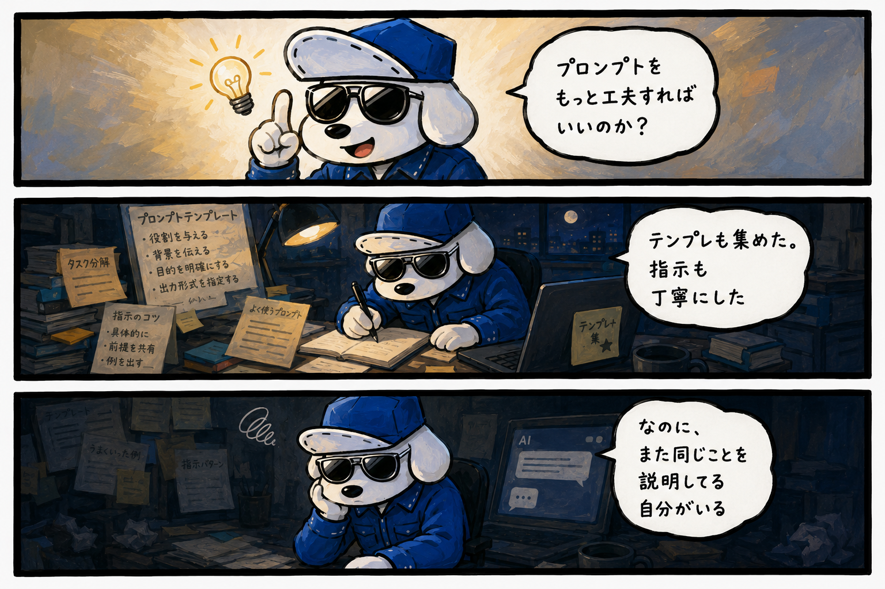
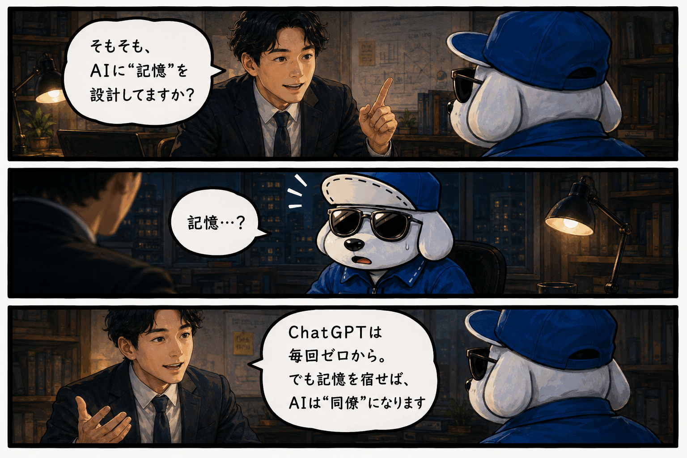

マンガで5分。あなたのAIが「同僚」に変わるまでの物語。
2025年11月、世界最大の経営コンサル会社マッキンゼーが、世界105カ国・約2,000社を対象にした調査を発表した。
10社のうち9社がAIを使い、成果を出せているのはわずか6%。
この差は、AIの性能じゃない。
次のページは、その差の正体に気づいた、ある経営者の物語。


今日聞いたことを、明日また同じ文脈で聞いたら、相手は覚えていません。昨日話した内容を、今日のAIは知りません。毎回、初対面です。これが【記憶のないAI】です。
どれだけ優秀なコンサルタントでも、あなたの業界の歴史、会社の文化、過去の失敗と成功を知らない人は「教科書通りの答え」しか出せません。だから「便利なんだけど、なんか薄っぺらい」という感覚になる。AIが悪いんじゃありません。記憶を持たせていないから、答えに厚みが出ない。それだけです。
会社の歴史、過去の判断、今の状況、積み上げてきたもの全部。「うちはこの方針で動いている」が、AIの中に積み上がっていく。
どういう役割で、何を優先し、何を絶対にしないか。あなたの判断の癖＝文脈が、行動規範として定まっていること。
記憶がないAIは、便利な道具。記憶とアイデンティティがあるAIは、パートナー＝右腕。この差は3ヶ月後に初めてわかります。半年後に「やっておいてよかった」と思う。1年後に「やっていなかった人との差」を見て、背筋が凍ります。
積み上がった記憶の上に、次の記憶が積み上がる。あなたのAIの中で、こんなことが起きていきます。
今日始めた人が1年後に積み上げている記憶を、来年始めた人は持っていません。この差は、努力では埋まりません。始めた時期が全てです。
仕事の内容、クライアント、積み上げてきた判断基準を整理。「言語化されていなかった判断軸」が初めて形になります。
技術的な部分は全部やります。あなたは「どういうAIにしたいか」を話してくれればいい。今日から動く状態で引き渡します。
仕組みを作って終わりじゃない。3ヶ月間、育つのを一緒に見ます。3ヶ月経ったら、私は必要なくなる。それでいいんです。
「店に入る前から、今日のゲームプランが全部見えている」
前日の売上と仕込み量、シフトのコメントから始まり、今は発注タイミング・人件費・来月の予測まで朝のブリーフに含まれる。
「顧問先から呼ばれる前に、こちらから声をかけられるようになった」
顧問先情報の積み上げで、「来月資金繰りが厳しくなるかも」という予兆をAIが先に拾えるように。
「打ち合わせに入る前に、仮説が3本立っている」
頭の使いどころが「思い出す」から「決める」に変わり、提案の質そのものが上がった。
気づいたその日が、最短・最速です。
初回は、話を聞くところから始めます。
『 MEMORY DESIGN 』